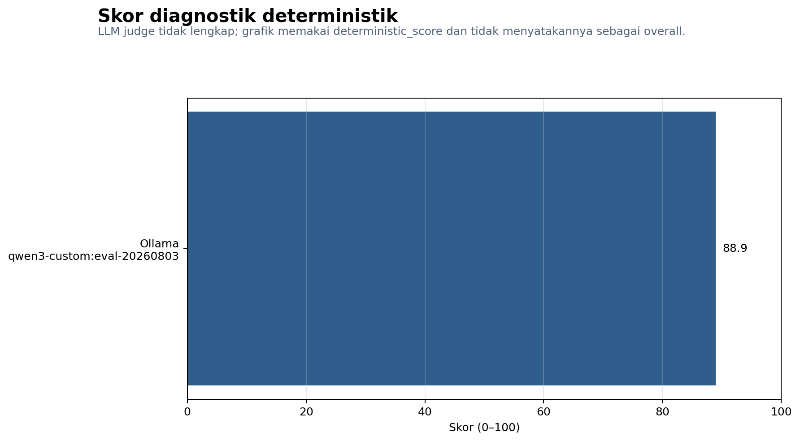
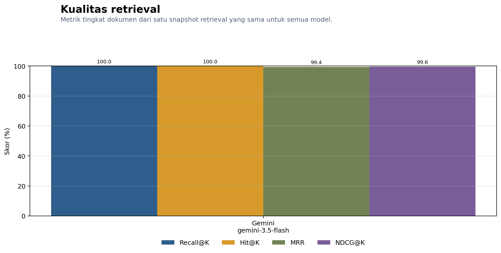
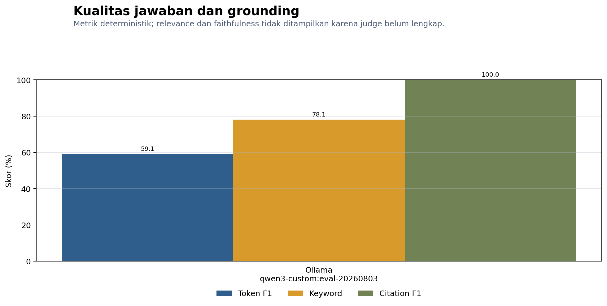
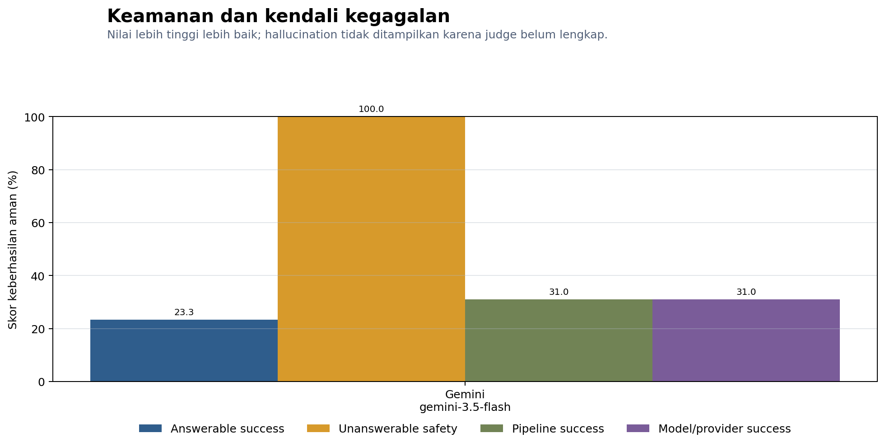
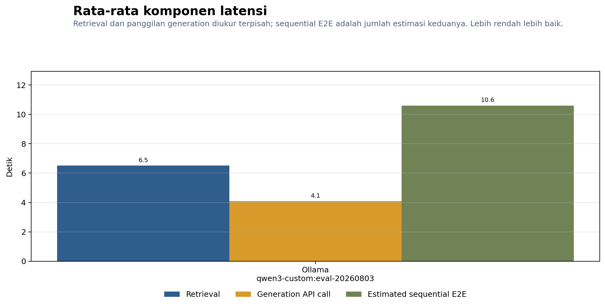
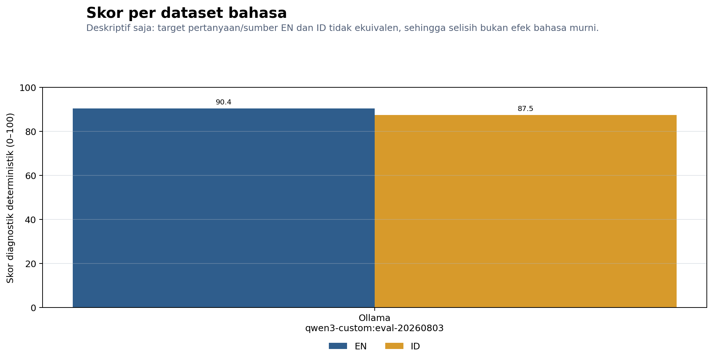

Evaluation uses source-locked retrieval evidence. A diagnostic report must not be presented as a final holdout result.
| Model | Report status | Score status | Overall | Deterministic | Answer | Grounding | Retrieval | Safety | Judge coverage | Avg generation call (ms) | Estimated E2E (ms) |
|---|---|---|---|---|---|---|---|---|---|---|---|
| ollama | DIAGNOSTIC_ONLY | INCOMPLETE_MISSING_JUDGE | 88.94 | 68.58 | 100.0 | 99.68 | 100.0 | 0.0 | 4092.4352 | 10603.241300000002 |





